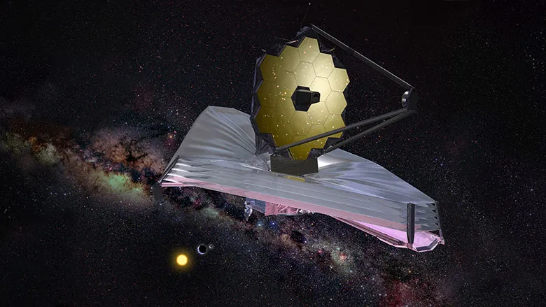
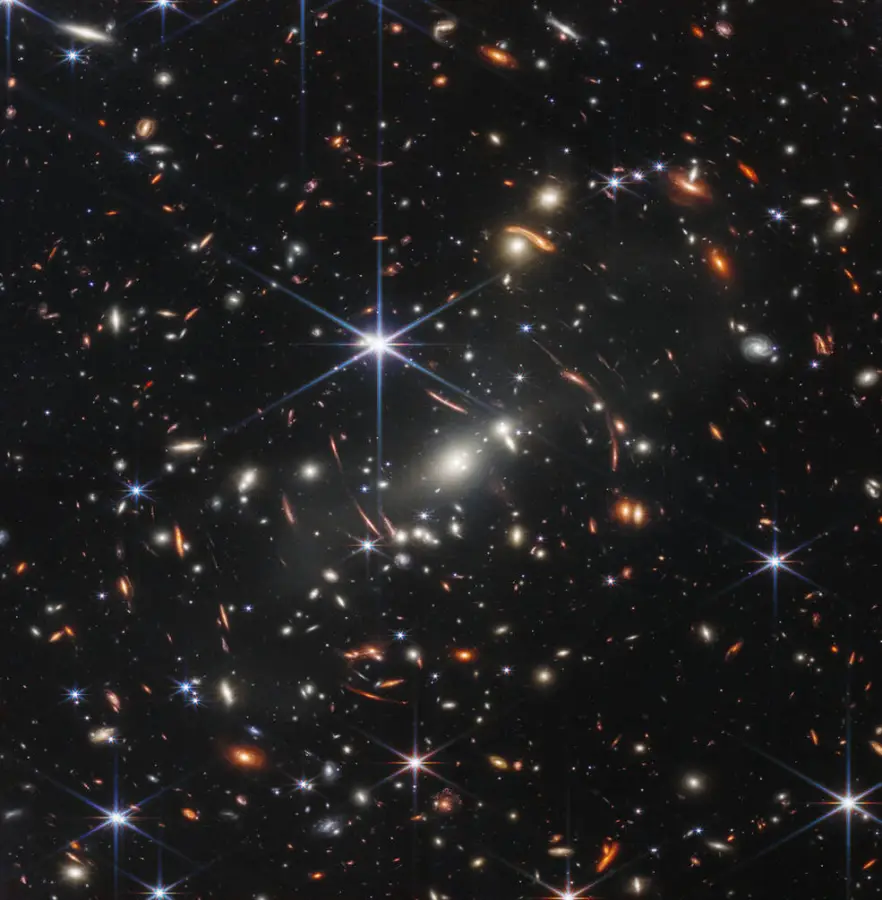
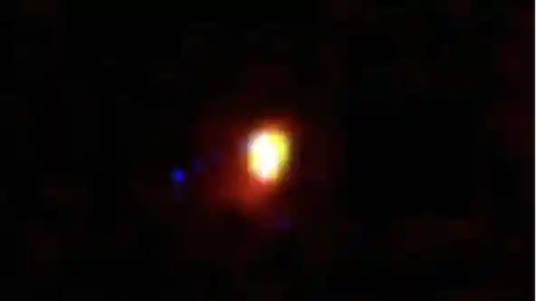
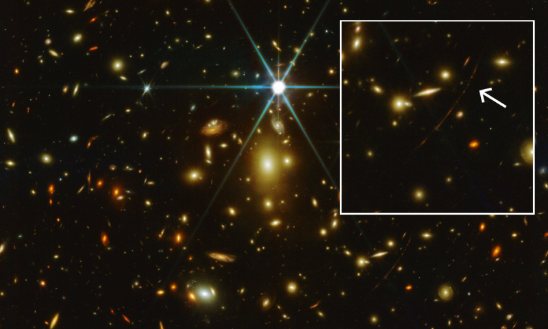
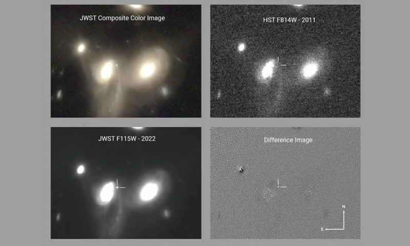

Telescópio espacial james webb
O Telescópio Espacial James Webb tem quatro objetivos principais: Pesquisar a luz das primeiras estrelas e galáxias que se formaram no Universo após o Big Bang. Estudar a formação e evolução das galáxias. Entender a formação de estrelas e sistemas planetários.
-
Principais descobertas ate o momento do james webb
-
Foto mais detalhada do Universo
O dia 11 de julho foi um grande marco para os cientistas. Na data, a NASA mostrou ao mundo a imagem mais detalhada já feita do Universo, que aponta para uma região com aglomerados de galáxias massivas conhecida como SMACS 0723.
-
Galáxia mais antiga já detectada
Primeiro, o James Webb olhou para a GLASS-z13, localizada a 13,4 bilhões de anos-luz de distância. Ela foi então considerada pelos cientistas como a galáxia mais antiga já vista no Universo.
-
Estrela mais antiga já vista
Outro recorde para o Webb: o telescópio foi capaz de capturar a estrela mais antiga já vista no Universo, localizada a 12,9 bilhões de anos-luz da Terra. Aerendel, como foi chamada, está localizada dentro da galáxia de Sunrise Arc.
-
Primeira supernova
O James Webb foi capaz de capturar a imagem de uma supernova – explosão estelar – que ocorreu entre 3 e 4 bilhões de anos-luz da Terra. Esse não é um evento tão antigo quando comparado aos citados acima
Se quiser saber mais sobre o james webb Clique aqui
Para mais informaçoes